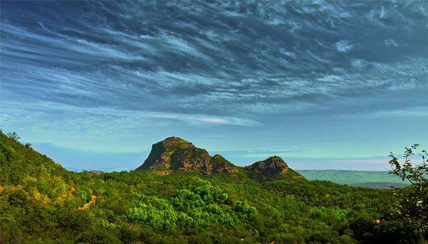

Welcome to Pachmari TourismSituated at a mounting height, Pachmarhi, popularly known as 'Satpura ki Rani' (Queen of Satpura) sits beautifully amidst the Satpura range. This attractive town was snuggled in the hills and forests until it was discovered by Captain James Forsyth in 1857. It is one of the most popular destinations in Madhya Pradesh and is a treasure trove of rich history and nature's bounty. The 'Pandavas Caves' in the town is a popular attraction which has a fascinating tale. The legend has it that these caves were built by the Pandavas who lived here along with their wife Draupadi during their exile. Another point of interest is the stone formed JataShankar cave that resembles the hundred-headed divine snake Seshnag. As per folklore, it is where Lord Shiva had supposed to have hidden from the Demon Bhasmasur. The rocks of this sacred cave looks like the tangled hair of Lord Shiva, hence it is named Jata Shankar. |
|  |
Situated at a mounting height, Pachmarhi, popularly known as 'Satpura ki Rani' (Queen of Satpura) sits beautifully amidst the Satpura range. This attractive town was snuggled in the hills and forests until it was discovered by Captain James Forsyth in 1857. It is one of the most popular destinations in Madhya Pradesh and is a treasure trove of rich history and nature's bounty. The 'Pandavas Caves' in the town is a popular attraction which has a fascinating tale. The legend has it that these caves were built by the Pandavas who lived here along with their wife Draupadi during their exile. Another point of interest is the stone formed JataShankar cave that resembles the hundred-headed divine snake Seshnag. As per folklore, it is where Lord Shiva had supposed to have hidden from the Demon Bhasmasur. The rocks of this sacred cave looks like the tangled hair of Lord Shiva, hence it is named Jata Shankar.
Covid Guidelines |
Covid Precautions
1] Maintain a safe distance from others (at least 1 metre), even if they don’t appear to be sick.
2] Wear a mask in public, especially indoors or when physical distancing is not possible.
3]Choose open, well-ventilated spaces over closed ones. Open a window if indoors.
4]Clean your hands often. Use soap and water, or an alcohol-based hand rub.
5]Get vaccinated when it’s your turn. Follow local guidance about vaccination.
6]Cover your nose and mouth with your bent elbow or a tissue when you cough or sneeze.
7]Stay home if you feel unwell.
If you have a fever, cough and difficulty breathing, seek medical attention.
Call in advance so your healthcare provider can direct you to the right health facility.
This protects you, and prevents the spread of viruses and other infections.
Masks
Properly fitted masks can help prevent the spread of the virus from
the person wearing the mask to others.
Masks alone do not protect against COVID-19,
and should be combined with physical distancing and hand hygiene.
Follow the advice provided by your local health authority.
|
Contact details:
Email:mptourism@gmail.com
contact no: 111222333
Office Address- shamsociety,visa road,bhag 2,Bhopal
|
Accomodations Itinerary Blog Film Tourism Film Tourism Policy MP Forest Details Eco Tourism Sitemap |
Tourist Map Help & Support 1800-233-7777 (10:00 AM to 6:00 PM) (Sunday holiday, Saturday and other holiday Half day) For feedback & suggestions mail us at: suggestions.mptb@mp.gov.in |
Address 6th Floor, Lily Trade Wing, (Behind D Mart), Jehangirabad, Bhopal, Madhya Pradesh 462008 |